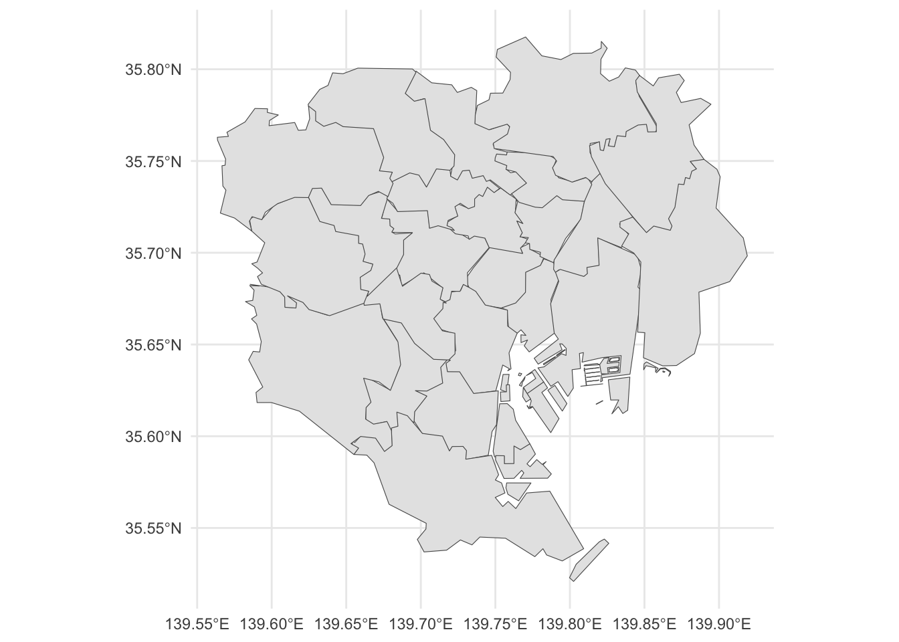
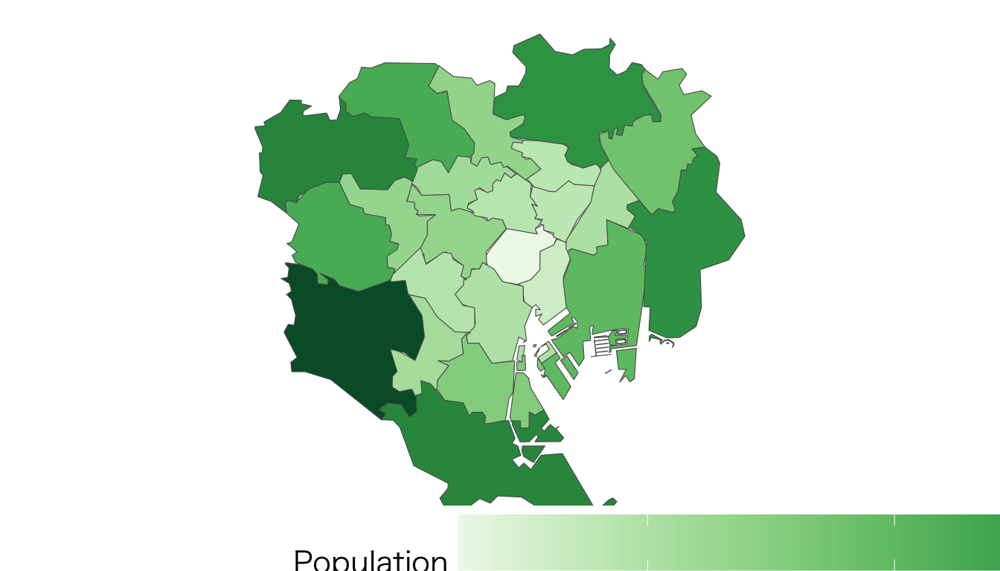
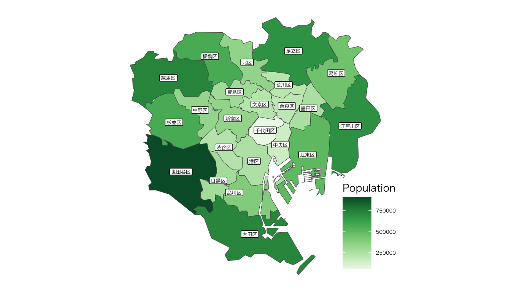

library(sf)
library(tidyverse)
library(jpndistrict) # to get the base map of Japan's prefecture
library(ggthemes) # to use theme_map
library(rnaturalearth) # to use ne_countries
library(DT) # to produce data table5 Population distribution of Tokyo
List of R packages used in this section:
- If you don’t find
japandistrict, use following:
install.packages(“remotes”) remotes::install_github(“uribo/jpndistrict”)
- Alternatively, you can use the
pacmanpackage manager to load necessary R packages from below:
pacman::p_load(sf, tidyverse, jpndistrict, ggthemes, rnaturalearth)- Name the data world_map
global_map <- ne_countries(scale = "small", returnclass = "sf")5.1 Population Map of Tokyo
- The prefecture code for Tokyo is 13. Now we can plot the map of the 23 wards of Tokyo
df_tokyo_sf <- jpn_pref(13, district = TRUE) %>%
dplyr::filter(str_detect(city, "区")) - Display the extracted map of Tokyo’s 23 wards
df_tokyo_sf %>%
ggplot() +
geom_sf() +
theme_minimal()
- Check your data here
head(df_tokyo_sf, 23)Simple feature collection with 23 features and 4 fields
Geometry type: MULTIPOLYGON
Dimension: XY
Bounding box: xmin: 139.5636 ymin: 35.52086 xmax: 139.919 ymax: 35.81758
Geodetic CRS: WGS 84
# A tibble: 23 × 5
pref_code prefecture city_code city geometry
<chr> <chr> <chr> <chr> <MULTIPOLYGON [°]>
1 13 東京都 13101 千代田区 (((139.7299 35.68555, 139.7333 35.67…
2 13 東京都 13102 中央区 (((139.7589 35.65892, 139.7646 35.65…
3 13 東京都 13103 港区 (((139.7714 35.62304, 139.7825 35.62…
4 13 東京都 13104 新宿区 (((139.6735 35.71852, 139.679 35.718…
5 13 東京都 13105 文京区 (((139.7174 35.71455, 139.7232 35.71…
6 13 東京都 13106 台東区 (((139.7632 35.72184, 139.7685 35.71…
7 13 東京都 13107 墨田区 (((139.8095 35.68689, 139.812 35.688…
8 13 東京都 13108 江東区 (((139.7715 35.61667, 139.7712 35.61…
9 13 東京都 13109 品川区 (((139.6954 35.60832, 139.6957 35.61…
10 13 東京都 13110 目黒区 (((139.6664 35.61861, 139.6631 35.61…
# ℹ 13 more rows- Import the .CSV data to make an interactive population map of Tokyo
df_tokyo_pop <- read_csv("data/csv/tokyo_pop.csv")
datatable(df_tokyo_pop)- Merge the spatial data with your population data
merge_tokyo <- df_tokyo_sf %>%
left_join(df_tokyo_pop, by = "city") %>%
st_as_sf()- Check the merged data
merge_tokyo %>%
head() %>%
rmarkdown::paged_table()- Plot your data with ggplot2
map_pop_tokyo <- merge_tokyo %>%
ggplot() +
geom_sf(aes(fill = population)) +
scale_fill_distiller(name = "Population",
palette = "Greens", direction = 1) +
theme_map(base_family = "HiraginoSans-W3") +
theme(legend.position = c(.1, -.1),
legend.direction = "horizontal",
legend.title = element_text(size = 15),
legend.text = element_text(size = 15),
legend.key.size = unit(1, "cm"),
legend.key.width = unit(3,"cm")) +
coord_sf(datum = NA)
map_pop_tokyo
- Plot your population data with the name of the cities in Tokyo
map_pop_tokyo_text <- merge_tokyo %>%
mutate(
text_x = map_dbl(geometry, ~st_centroid(.x)[[1]]),
text_y = map_dbl(geometry, ~st_centroid(.x)[[2]])
) %>%
ggplot() +
geom_sf(aes(fill = population)) +
geom_label(aes(x = text_x, y = text_y, label = city),
size = 1.7, family = "HiraginoSans-W3") +
scale_fill_distiller(name = "Population",
palette = "Greens", direction = 1) +
theme_map(base_family = "HiraginoSans-W3") +
theme(legend.position = c(.8, .05),
legend.title = element_text(size = 10),
legend.text = element_text(size = 5),
legend.key.size = unit(0.5, "cm"),
legend.key.width = unit(1,"cm")) +
coord_sf(datum = NA)
map_pop_tokyo_text
- To export the above figure, use the following code:
ggsave("fig/map_pop_tokyo_text.png", map_pop_tokyo_text, width = 13, height = 13)